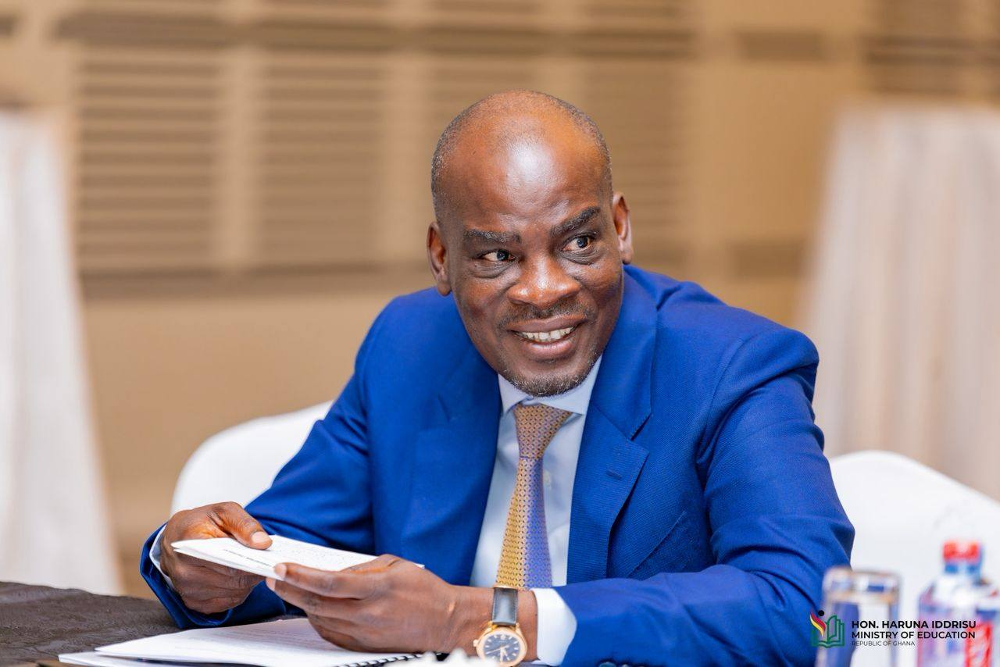

Education
Reform
Currently spearheading transformative initiatives as Minister for Education, including the “No-Fees-Stress” digital platform to streamline tertiary education applications and financial aid, and the establishment of a GHS 50 million National Research Fund to boost the knowledge economy.
Employment &
Labour Relations
During his tenure, he played a pivotal role in strengthening industrial relations, notably chairing the Technical Cooperation of the 323rd Governing Body Session of the International Labour Organisation (ILO).

Modernizing
Communications
Championed the modernization of Ghana’s telecommunications sector by introducing Mobile Number Portability, mandatory SIM card registration, and implementing the Data Protection Law to safeguard citizen privacy.